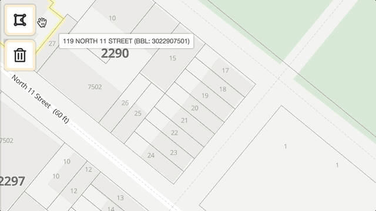
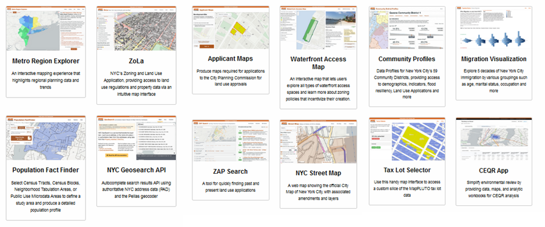

The New York City Planning Labs: Virtual PlanTech Tour
5 May 2020
Within the New York City Planning Department exists a small team of designers and software developers doing incredible work building open technology to help support the city’s planning mission
The team is known as the New York City Planning Labs and having admired then from afar for a number of years I was stoked to have the opportunity to talk to Hassan Adekoya (Chief Information Officer NYC Planning Department), Ryan Blair (Senior Director of Application Development Practices) and Andrew Cochran (Director NYC Planning Labs) late last week. I have written up an outline of our discussion below with the aim of providing some inspiration for those involved in various fledgling initiatives across Australia, or at the very least to raise awareness of the wealth of resources and reflections they have made freely available.
The first thing I learnt is that the lab is only one of several data and digital teams in the department with others specifically tasked to areas such as data management and digital community engagement. Particularly given the current climate many of you may be interested (when you have finished reading this article 😉) to have a look at how they have set up their online community engagement portals using software from the Australian company EngagementHQ for Soho/NoHo, Southern Boulevard, and the Gowanus neighbourhood.
Today though I want to focus on the work of the planning lab itself. It started life in 2017 off the back of some big ideas and a team of civic technologists out to prove that technology in government could be delivered differently in a cheaper, quicker, more transparent and user-centered fashion. From the outside this all sounded and looked great, and it was, and is, but it was nevertheless interesting to get additional insight into what was involved on the inside to get it up and running.
So, from big ideas the first step was to start small and move quickly which resulted in the development of a rapid succession of lightweight data visualisation applications designed for and with planners to help them with their work, and the community to help them navigate the system. These applications came straight from the identification of quick and measurable wins, for example in order to reduce the volume of mapping requests, "Applicant Maps" was born, providing a simple interactive web application (shown below) from which users can easily and quickly produce maps fully compliant with the legal development assessment requirements, an previously time-consuming process requiring specialist GIS expertise.

The website now boasts twelve fully functional applications which have all been made freely available. The team were able to prove their worth within the first six months and now nearly three years on have the license to slow down in order to start tackling more substantial projects, presently an overhaul of the city’s application management system.

As we talked about the journey so far two themes emerged as substantial changes to usual practice, requiring dedicated effort from the team, but also critically, support from senior management and decision makers. The first of this was around user-centered design and the idea that instead of shopping around for software and comparing lists of features, starting with the problem and designing and developing a piece of software side by side with the end user. In fact, when I asked them to reflect on their experience working with planners the answer centered on helping planners realise that they are an integral part of the software development process.
Secondly, we spoke for a long time about working in the open. As a government initiative the New York City Planning labs is impressive. The underlying code of all their projects is published openly for free re-use and individual team members regularly blog their reflections on the projects and findings of their user research. They are by no means the only government digital innovation lab to do this, with particularly notable examples within the UK and Canadian national governments, but in Australia the practice is still pretty rare (yes, I know there are some exceptions) and in terms of planning-specific tech I don’t know of anywhere in the world that is close to this group, although I would be happy to find out that I am wrong.
Whilst I have a perhaps have an idealistic frame when it comes to open technology (and the freedom right now of working at a university to explore broader questions of transparency, the rule of law, the role of government and other democratic ideals), what struck me from our conversation was more was the strength of the pragmatic benefits. For example, the ability to attract staff. A common complaint in the public sector is the inability to attract software developers on a competitive wage, but through working in the open they have found that they have been able to attract talented people keen to spend their time on projects contributing to broader civic good. Practically speaking it also helps when working in a small team to be able to point to your code when you run into a problem and need to ask the internet for help
Again though, it sounds like none of this was possible without leadership and sustained effort. With the introduction of so many new practices special permissions were required each step of the way, from setting up a twitter account to coding in the open. It did help that they already had a well-established open data program upon which their applications were primarily centered around making adding a more accessible and user-friendly interface. Nevertheless, as with all new things a leap of faith is also necessary, and one that, at least from my point of view, has paid off handsomely.
Now we all know New York City is a particularly special place in this world, and a city much larger and presumably better resourced than any municipal government we have here in Australia. However, with so much in common between our planning systems and by making so many resources freely available, this group has given a huge leg up to anyone else who would like to follow in their footsteps, and through such collaborative practices I think we could achieve similar things.
 @ClaireCities
@ClaireCities